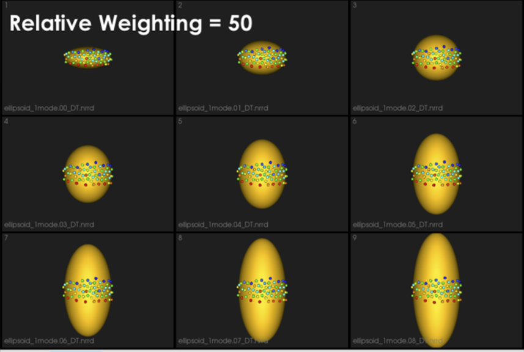
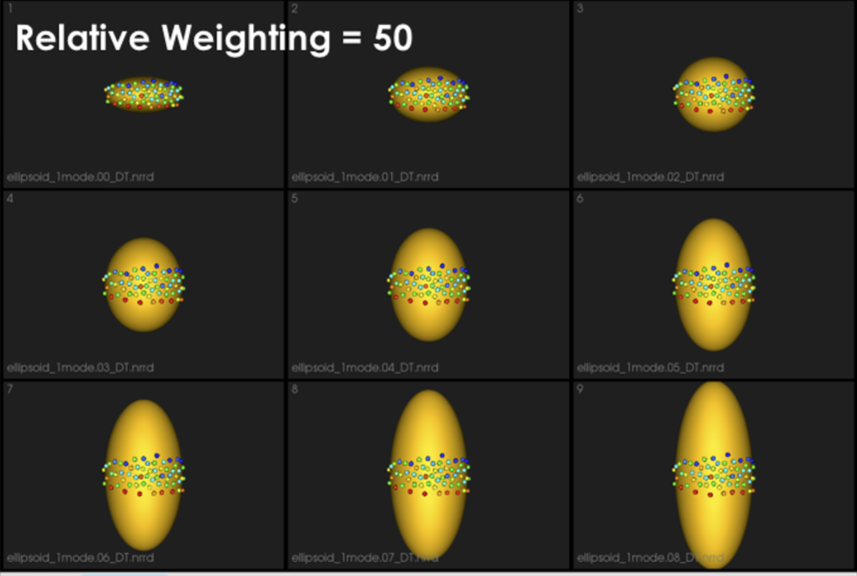

How to Optimize Your Shape Model?
Particle-based Shape Modeling
ShapeWorks constructs statistically optimal anatomical mapping across different shape samples by automatically computing a dense set of corresponding landmark positions that are geometrically consistent on a set of anatomy segmentations or surface meshes and does not rely on any specific surface parameterization.
ShapeWorks uses a set of interacting particle systems, one for each shape, to produce optimal sets of surface correspondences in an ensemble. Particles interact with one another via mutually repelling forces to cover optimally and, therefore, describe surface geometry. Particles are positioned on surfaces automatically by optimizing the model's information content via an entropy optimization scheme.
ShapeWorks optimizes landmark positions to minimize the overall information content of the model (first term) while maintaining a good sampling of surface geometry (second term)

Particle-based Representation
More formally, consider a cohort of shapes \(\mathcal{S} = \{\mathbf{z}_1, \mathbf{z}_2, ..., \mathbf{z}_N\}\) of \(N\) surfaces, each with its own set of \(M\) corresponding particles \(\mathbf{z}_n = [\mathbf{z}_n^1, \mathbf{z}_n^2, ..., \mathbf{z}_n^M] \in \mathbb{R}^{dM}\) where each particle \(\mathbf{z}_n^m \in \mathbb{R}^d\) lives in a \(d-\)dimensional Cartesian space (typically \(d=3\) for anatomies), and whose ordering implies correspondence among shapes. Each of the particles is called a correspondence point, and is constrained to lie on the shape's surface. Collectively, the set of \(M\) particles is known as the configuration.
Shape vs. Configuration Spaces
This particle-based representation incorporates two types of random variables: a shape space variable \(\mathbf{Z} \in \mathbb{R}^{dM}\) and a particle position variable \(\mathbf{X}_n \in \mathbb{R}^d\) that encodes the distribution of particles on the \(n-\)th shape (configuration space). This particle-based representation avoids many of the problems inherent in parametric representations such as the limitation to specific topologies, processing steps necessary to construct parameterizations, and bias toward model initialization.
World vs. Local Coordinates
For groupwise modeling, shapes in the shape space should share the same world coordinate system. Hence, we use generalized Procrustes alignment to estimate a rigid transformation matrix \(\mathbf{T}_n\) that can transform the particles in the \(n-\)th shape local coordinate \(\mathbf{x}_n^m\) in the configuration space to the world common coordinate \(\mathbf{z}_n^m\) in the shape space such that \(\mathbf{z}_n^m = \mathbf{T}_n\mathbf{x}_n^m\).
Optimization Cost Function
Correspondences are established by minimizing a combined shape correspondence and surface sampling cost function \(Q = \alpha H(\mathbf{Z}) - \sum_{n=1}^N H(\mathbf{X}_n)\), where \(H\) is an entropy estimation of the shape distribution in the shape space, and \(\alpha\) is the relative weighting of the correspondence term.
In particular, ShapeWorks explicitly models the inherent trade-off between the statistical simplicity of the model (i.e., compactness or lowest entropy) in the shape space (i.e., inter-surface) and the accuracy of the shape representations (i.e., good surface samplings or highest entropy) in the configuration space (i.e., intra-surface). The cost function \(Q\) is minimized using gradient descent with an adaptive time step.
Because correspondence points (or particles) in this formulation are not tied to a specific surface parameterization, the method operates directly on both volumetric data and triangular surface meshes. It can also be easily extended to arbitrary shapes, even nonmanifold surfaces.
Particles Initialization & Optimization
ShapeWorks entails a nonconvex optimization problem. Hence, it is not practical to perform the optimization of the configuration space (intra-surface) and the shape space (inter-surface) with a full set of correspondence points (or particles) in one step.
We address this using a coarse-to-fine optimization scheme to speed up convergence to an acceptable local minimum. In particular, the optimization is performed as a multi-step process where particles are added via spitting each particle to produce a new, nearby particle at each step until the desired number of particles is reached.
ShapeWorks uses a particle splitting strategy, in which the full set of particles is optimized in a multi-scale (i.e., coarse-to-fine) fashion
For these steps, the optimization of the configuration space (intra-surface) and the shape space (inter-surface) is weighted to downplay the effect of the correspondence term (default \(\alpha = 0.05\)), which results in an evenly spaced distribution of particles on each surface. These steps are collectively called the initialization steps.
At each scale, the initialization step is followed by an optimization step. For this step, the optimization of the configuration space (intra-surface) and the shape space (inter-surface) are weighted (equally or sometimes using \(\alpha > 1\) to emphasize the correspondence term).
Thus, the initialization proceeds simultaneously with the optimization in a multi-scale fashion, generating progressively more detailed correspondence models with each split.
For both, the initialization and optimization steps, the weighting to the shape space may be set by the user. Further, as each step of the optimization is an iterative process, the number of iterations may be set by the user.
At each scale, the number of iterations could impact the quality of the optimized model
The first particle: The particle system is initialized with a single particle on each shape. The first particle is found by raster-scanning the signed distance map and finding the first zero crossing. The particle system can also be initialized using user-defined sparse corresponding landmarks across all shapes.
On Algorithmic Parameters
Optimizing the shape models entails several algorithmic parameters. Below, we highlight the most important ones that might need tuning depending on the dataset at hand.
Correspondence Relative Weighting
One difference between initialization and optimization steps is how important the correspondence (inter-surface) objective is compared to the surface sampling (intra-surface) term using a relative weighting factor for the correspondence term (i.e., \(\alpha\) in \(Q\)). Hence initial_relative_weighting is the weight (or \(\alpha\)) used in initialization steps and the relative_weighing is the weight (or \(\alpha\)) used for optimization steps.
Typically initial_relative_weighting is selected to be small (in the order of 0.01) to enable particles to be uniformly distributed (i.e., evenly spaced) over each shape, and hence optimization starts with a good surface sampling.
It can be noted that by allowing correspondence to dominate the optimization process (using higher relative weighting), particles tend to be distributed in regions with relatively small variability across the given population. As the relative weighting tends to infinity, particles will be cluttered in one spot on each surface, which means that all shapes will be represented as a point at the shape space origin. Also, using lower relative weighting, i.e., allowing surface sampling to dominate the optimization process, results in particles becoming out-of-correspondence.
As we increase the relative_weighting, i.e., the correspondence term weight, particles tend to be distributed over surface regions that have less variability across shape samples; hence the shape distribution in the shape space tends to collapse to a single point (i.e., shape)

 

Shape Statistics in Initialization and Optimization Steps
At earlier scales, we do not have enough particles to describe the geometry of each surface. Hence, to quantify the notion of correspondence (inter-surface), we use mean energy (i.e., pushing all shapes in the shape space to the mean shape or, in other words, the covariance matrix is assumed to be identity).
As more particles are added to the correspondence model, we use the entropy of the distribution of the shapes (assumed to be Gaussian distributed), where we have more particles that can reveal the covariance structure of the shape space.
This behavior is controlled by the use_shape_statistics_after parameter, which specifies the number of particles, after which shape statistics can be used in the initialization and optimization steps.
Using shape statistics (i.e., covariance structure) results in a better correspondence over iterations, below we use use_shape_statistics_after after 1024 particles
Starting and Ending Regularization
Particle movement during optimization (due to the correspondence term) entails computing the covariance matrix's inverse. We regularize the covariance matrix to handle degenerate covariances.
starting_regularization and ending_regularization parameters determine the covariance matrix's regularization for the shape-space entropy estimation. This regularization exponentially decays along with optimization iterations where better covariance structure can be estimated with a better correspondence model.
Higher regularization values would undermine the ensemble's underlying covariance structure and favors all shapes to converge to the mean shape. Hence, it is recommended to use starting regularization value as ~5% of the covariance matrix's expected highest eigenvalue while ending regularization can be taken as ten times less than the starting value.
This regularization can be considered as having a Gaussian ball in the shape space. Starting regularization pushes all samples to the mean and hides the underlying unoptimized covariance structure. Ending regularization should be small enough to reveal the optimized covariance structure.

Optimizing Correspondences
You can use either ShapeWorks Studio or shapeworks optimize <parameters.xml> or shapeworks optimize <project.xlsx> command to optimize your shape model. Both use a set of algorithmic parameters to control the optimization process.
See the for details regarding the XML file and project file format.
Parameter Tuning
General Process

The general process for parameter tuning is to:
- Select a subsample of data to tune on.
- Start with default parameters and a small number of particles.
- Tune parameters one at a time until particles are evenly spread over the entire geometry and in good correspondence.
- Optimize on the entire cohort with the best set of hyper-parameters and desired number of particles to get the final shape model.
Qualitative Assessment
To assess the quality of an optimized shape model, consider the following:
- Are the particles evenly spaced, covering the entire geometry of each sample?
- Are the particles in good correspondence across the samples? This can be assessed by inspecting the neighboring correspondences of particles (in Studio hover over a particle and press 1 to visualize).
- Does the surface reconstruction result in non-anatomical/plausible shapes?
- Do the shape modes of variation (PCA) reflect meaningful and are they smooth variations? All particles should move at similar velocities and along similar trajectories to their neighbors.
Tips and Tricks
- Use a Subsample: To reduce the time spent tuning algorithmic parameters for model optimization, tuning should be done on a representative subsample. If working with complex shapes or highly variable anatomies, start with a small subset (e.g., 5 samples) with shapes that are most similar. A clustering-based approach can be used to automate this selection e.g., k-means on segmentations, spectral clustering on meshes. Once parameters have been found which result in a good correspondence model on the subset, the subset size can be increased. It may be helpful to increase the subset size and re-assess before moving to the full cohort.
- Start Small: Parameter tuning time can also be decreased by starting with a smaller number of particles and iterations than desired. In general, parameters which yield a good shape model with fewer particles will also yield a good model with increased particles. For this reason, the number of particles should be the last parameter tuned.
- Procrustes: Only consider using Procrustes if the groomed cohort has left-out misalignments.
- Unevenly Distributed: If particles are not evenly distributed on the surface, try increasing initialization iterations or decreasing relative weighting.
- Bad Correspondence: If particles are not in good correspondence, try increasing relative weighting. If particles are flipping sides on thin structures, enabling normals can resolve this.
Correspondences on New Samples
ShapeWorks supports an optimization mode, namely fixed domains, to place (i.e., optimize) correspondences on new shapes using a pre-existing shape model. In the fixed domains mode, particles on selected shapes that construct the pre-existing shape model are fixed, and particles on new shapes are optimized to represent them in the context of this shape model. See Fixed Domains for Ellipsoid: Correspondences on New Shape for an example.
To enable the fixed domains mode, the XML should have the below additional tags. For this mode, you can use "use_shape_statistics_after": 0 to enable shape statistics in all the steps as the pre-existing shape model already has enough particles optimized to reflect the covariance structure in the shape space.
<point_files>: A list of local.particles files to be fixed, i.e., the pre-existing shape model. The new (to be optimized) samples/domains should be initialized with the mean particles.<fixed_domains>: A list of domain ids (starting from 0) of the domains that are fixed (i.e., not optimized).